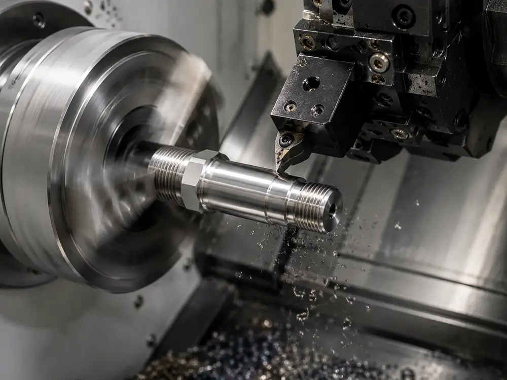
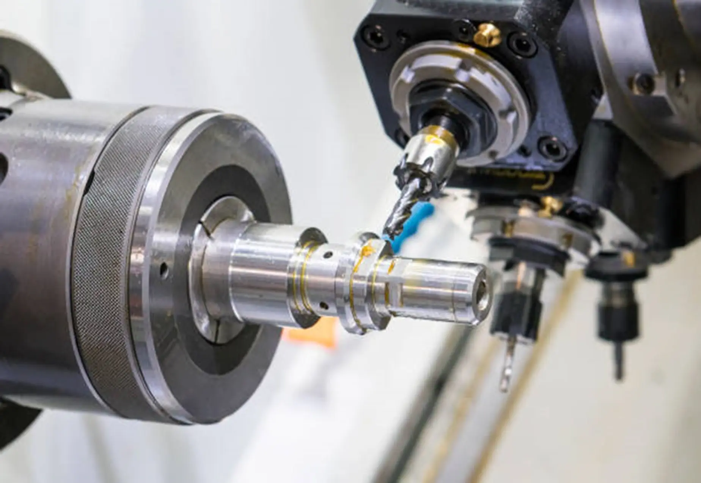
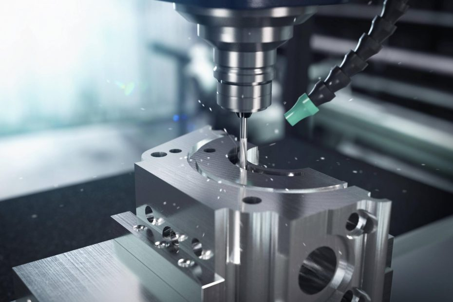

CNC
Um Operador de Centro de Usinagem com Comando Numérico ganha em média R$ 3.255,93 por mês no Brasil, para uma jornada de 44 horas semanais. Em 2026, a remuneração vai do piso salarial de R$ 2.725,79 ao teto salarial de R$ 4.633,00, com base em 14.900 profissionais admitidos e desligados no regime CLT nos últimos 12 meses.
CNC

O processo foi feito em um torno mecânico, onde uma peça metálica cilíndrica gira enquanto uma ferramenta de corte remove material para criar roscas, ressaltos e perfis de precisão.

O CNC (Controle Numérico Computadorizado) é um processo de fabricação automatizado em que softwares e códigos de programação controlam o movimento de máquinas-ferramenta (como tornos, fresadoras, roteadores, cortadores a laser e a plasma) para remover ou moldar materiais com alta precisão.

Quem trabalha com CNC (Comando Numérico Computadorizado) opera, programa ou ajusta máquinas-ferramentas automatizadas por computador (como tornos, fresadoras, centros de usinagem, cortadoras a laser ou roteadores) para cortar, furar, moldar ou desgastar materiais como metais, plásticos e madeiras com alta precisão.